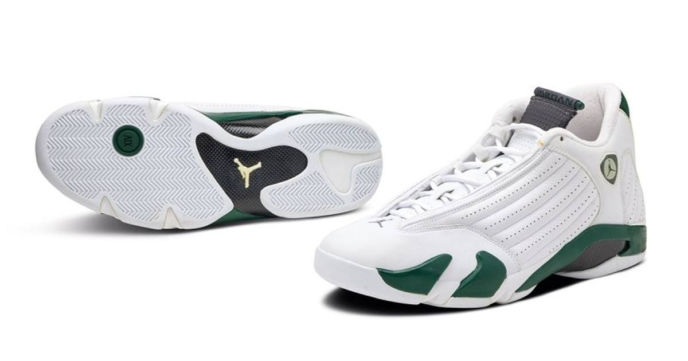

Air Jordan 14 'Forest Green' Drops Today: $215 for the 2005 Classic's First-Ever Retro
The Air Jordan 14 'Forest Green' returns Saturday, October 31 for $215 — the first retro of the 2005 LS-era colorway, in Gorge Green and Light Graphite with a Ferrari-inspired emblem.

Halloween weekend's biggest retro is not a costume — it is a comeback 21 years in the making.
The Air Jordan 14 "Forest Green" drops Saturday, October 31 for $215, the first-ever retro of the 2005 colorway. It has not returned to the market since its original debut, which is exactly why it has sat near the top of so many retro wish lists.
What you are getting
The details, per the release listings: style code 487471-300, in a Gorge Green / Light Graphite-White-Light Graphite colorway. White perforated leather with rib stitching covers the upper, green shows up on part of the midsole, and the Ferrari-inspired emblem — the 14's signature flourish — anchors the look. Black accents, a carbon fiber shank plate and a mostly white rubber outsole finish it off.
Where to get them
The drop is wide: Nike, Foot Locker, Finish Line, Champs, Dick's Sporting Goods, Shiekh, Shoe Palace, JD Sports and select Jordan Brand retailers. At $215, it sits in the standard retro tier — but a first retro of a 2005 colorway rarely sits for long.
Also dropping today
• Supreme x Nike Air Force 1 Low "Iguana" — $125 retail, the latest Supreme x Nike low-top.
• Nike Ja High Halloween — the hi-cut build of Ja Morant's line makes its public debut, timed for Halloween weekend.
The Jordan 14 is the headliner, though. A 2005 colorway, untouched for over two decades, finally back on shelves — that is the kind of drop that makes a Saturday morning alarm worth setting.
Sources: Sneaker News, IAHHM